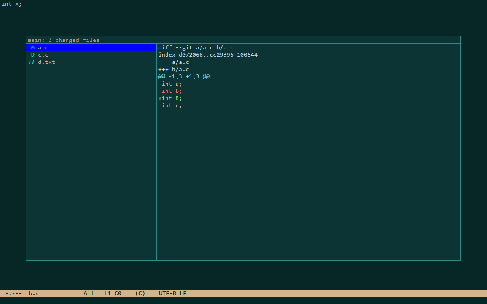

git
C-x g shows the uncommitted changes of the project's git work tree in a box over the windows: every file git status
lists, with its two-letter status, and the selected file's diff against HEAD. It only reads: nothing is staged,
committed or reverted. git runs in the background, so typing never waits for it; the box opens once git has answered,
and without git or outside a work tree a message says so and nothing opens.
| keys | command | what it does |
|---|---|---|
C-x g | show-git-changes | the changed files and their diffs |
While the box is open:
| keys | command | what it does |
|---|---|---|
TAB | modal-other-pane | from the files to the diff and back |
C-n C-p | modal-next modal-previous | the next / previous row |
RET | modal-accept | visit the selected file at its first change |
g | git-changes-refresh | run git status again |
C-g | keyboard-quit | close the box |

Settings
ronin runs git.exe from PATH, or the program git_path names. A diff is cut after git_diff_max_lines lines and the
file list after git_status_max_files files, each with a last line saying so; a git that prints nothing for
git_timeout_ms is stopped. The view needs git 2.15 or later and does not scroll diffs sideways.